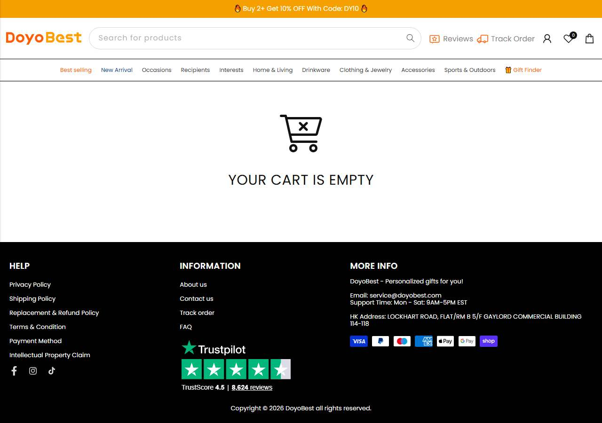

03 · concorrente · dropship de marca · nível médio
Doyobest MODELAR
Copiar: O calendário de entrega na PDP e o código de desconto para 2+ itens (DY10). A conta de Instagram com 65 mil seguidores mostra construção de marca. Não copiar: Catálogo de 1.000 itens: é complexidade que iniciante não aguenta.
doyobest.com ↗Shopifydomínio arquivado desde 23/07/2023 (cerca de 2 anos e 3 meses)Instagram @doyobest_ins, 65 mil seguidores, 313 posts
produto campeão · 61 dias no ar no anúncio mais antigo
Custom Standard Doormat with Watercolor Dog Portrait and Hello Greeting
$27,99
Catálogo: 1.000 produtos lidos (mediana $29,99, faixa $16,99 a $102,99 nos primeiros 250), catálogo de presentes em geral; o pet é o ângulo dos anúncios
02Mídia paga completa
2.026
anúncios ativos
1 página(s) da Meta, contadas por page_id
observado · Biblioteca, 20/10/2026
38.610
anúncios no histórico
já criados, ativos ou não
observado
5,2%
sobrevivência
ativos ÷ histórico
calculado
300+
anúncios no Google
consultado
observado · Google Ads Transparency
Ritmo de criativo (amostra de busca por pet)
Valor
Leitura
Anúncios na amostra
24
contagem dos anúncios da loja que apareceram nas buscas de pet; a página tem mais
Criativos únicos
7
textos e títulos distintos
Duplicação
3.43x
variação moderada
Anúncios novos por dia
0,1
janela da amostra de 356 dias, sem extrapolar rajada
Criativos novos por semana
0.1
únicos ÷ janela × 7
Mais antigo ainda no ar
363 dias
mediana de 33 dias
Formato
VIDEO 9, IMAGE 14, DCO 1
mix da amostra
Ranking de criativos vencedores (os mais longevos desta loja)
Dias no ar
Formato
Título e texto
Variações
Fonte
363 dias
VIDEO
❤️🩹 A Metal Car Hanger that will accompany you
🥹Let an angel accompany you on every journey. Pet Memorial Metal Car Hanger
👇🏻👇🏻Order Now 👇🏻👇🏻
https:
BenchmarkBenchmark de custo, categoria Pet Care (IRP Commerce, setembro/2026): CPM $10,42, CPC $0,67, CPA 8.83% da receita. CPM e CPC vêm de benchmarks públicos de e-commerce da Meta, não de pet.
Vídeo salvo localmente, sem capa (ffmpeg ausente nesta máquina)
VIDEO
DoyoBest
❤️🩹 A Metal Car Hanger that will accompany you
🥹Let an angel accompany you on every journey. Pet Memorial Metal Car Hanger
👇🏻👇🏻Order Now 👇🏻👇🏻
https://doyobest.com/products/10080565035325
#doyobest
no ar há 363 dias · desde
ativo
Prova do anúncio
DoyoBest
🥹Let an angel accompany you on every journey. Pet Memorial Metal Car Hanger
👇🏻👇🏻Order Now 👇🏻👇🏻
https://doyobest.com/products/10080565035325
#doyobest
não obtidoa Meta não publica gasto para e-commerce fora dos recortes regulatórios
O que isso prova
Que a página manteve este ângulo de memorial por 363 dias.
O que isso não prova
Quantas vendas ele gerou, gasto ou lucro.
MomentumMomentum da operação: estável. Ranking Tranco subindo e criativos de memorial de até 363 dias, mas só 5% do histórico segue no ar: teste em volume.
03Tráfego real (SimilarWeb · 10/2026)
432K
visitas por mês
SimilarWeb público
observado · SimilarWeb
52.71%
taxa de rejeição
visitas que saem sem clicar em nada
observado
2.26
páginas por visita
duração 00:01:43
observado
United States 84.62%
principal país
origem do tráfego
observado
Em resumoO SimilarWeb não separa pago de orgânico para lojas pequenas nesta coleta; o tráfego pago é inferido pela ausência de redes sociais e pela quantidade de anúncios.
04Faturamento mensal e investimento em mídia estimados
$536.880
central por mês
9.202 pedidos × ticket médio
calculado
$257.564
piso
ticket do produto campeão: $27,99
calculado
$816.196
teto
ticket de $89 (75% do setor)
inferido
$47.407
mídia estimada por mês
8.83% da receita central
inferido
MétodoMétodo: 432.000 visitas × 2,13% de conversão (setor 2,13% × ajuste 1 pela rejeição) = 9.202 pedidos. Confiança: medido nas visitas, calculado no resto. Nunca é receita contábil.
05Páginas capturadas
Home
PDP · Custom Standard Doormat with Watercolor
Carrinho

CapturaCapturas desktop e celular feitas em 20/10/2026 com Playwright headless. O carrinho foi aberto depois de clicar no botão principal da PDP, sem finalizar compra.
06Anatomia do vencedor
Elemento
Decodificação
Big idea
Seu pet, seu "bem-vindo": a porta de casa com o retrato do seu cão.
Mecanismo
Arte em aquarela feita da foto, com pré-visualização do design antes de comprar e calendário de entrega visível.
Gancho
Vídeo e imagem do tapete na porta, com a frase "Welcome Home, Buddy".
Presell
nenhum, loja direta
Objeção principal
Quando chega? Resposta: linha do tempo pedido, envio, entrega na própria PDP.
07Catálogo, stack e prova
Plataforma
Shopify
Apps e stack
Bold, Judge.me, Pinterest, TikTok, GTag
Pixel da Meta
não obtidonão identificado no HTML
Catálogo
1.000 produtos lidos (mediana $29,99, faixa $16,99 a $102,99 nos primeiros 250), catálogo de presentes em geral; o pet é o ângulo dos anúncios
Redes sociais
Instagram @doyobest_ins, 65 mil seguidores, 313 posts
Prazo de envio e frete
calendário na PDP: pedido 20/10, envio 23 a 26/10, entrega 31/10 a 04/11 (11 a 15 dias)
Garantia
Delivery guarantee 99%+, Quality guarantee (selos na PDP)
BNPL (parcelamento)
nenhum identificado
Reviews
Judge.me: 4,39 de 5 em 113 avaliações no produto campeão (JSON-LD da PDP)
Páginas institucionais
rodapé com Shipping, Refund, Privacy e Terms (conferido na home)
LeituraO que copiar: O calendário de entrega na PDP e o código de desconto para 2+ itens (DY10). A conta de Instagram com 65 mil seguidores mostra construção de marca. O que evitar: Catálogo de 1.000 itens: é complexidade que iniciante não aguenta.
08Dados não obtidos
Dado
Motivo
Método tentado
Pixel da Meta
não identificado
grep do HTML
Prazo de produção separado do frete
só o prazo total é exibido
leitura da PDP
09Veredito
DROPSHIP DE MARCA
modelo
dropship puro, dropship de marca ou marca
inferido
MODELAR
veredito
estrutura replicável no seu porte
inferido
NÍVEL MÉDIO
nível de execução
soma 7 de 12
calculado
CONSTRUÍVEL
defensabilidade
dá para construir marca
inferido
Eixo do scorecard
Pontos
Leitura
Sourcing simples
1 de 2
pontua em parte
Ticket fecha sem escada complexa
1 de 2
pontua em parte
Criativo simples de produzir
2 de 2
pontua cheio
Mecanismo com urgência
2 de 2
pontua cheio
Investimento de entrada baixo
0 de 2
não pontua
Sem dependência de autoridade
1 de 2
pontua em parte
Total
7 de 12
nível médio: é etiqueta de perfil, não nota de corte
Fontede onde veio
Mídia, tráfego, capturas e catálogo desta ficha.observado
Observaçãoo que foi visto
2.026 anúncios ativos, 5,2% de sobrevivência, dropship de marca, Shopify.observado
Interpretaçãoo que isso sugere
A estrutura (produto, oferta, página) é replicável por iniciante.inferido
Decisãoo que a régua diz
MODELAR, nível MÉDIO, CONSTRUÍVEL.calculado
Próxima açãoo que fazer agora
Destilar o blueprint a partir desta página.recomendado